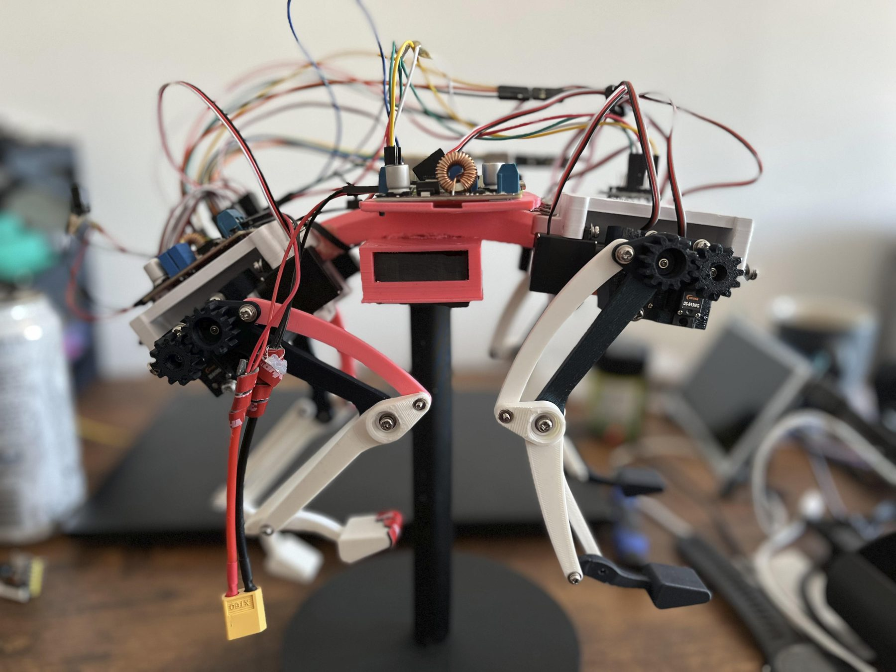
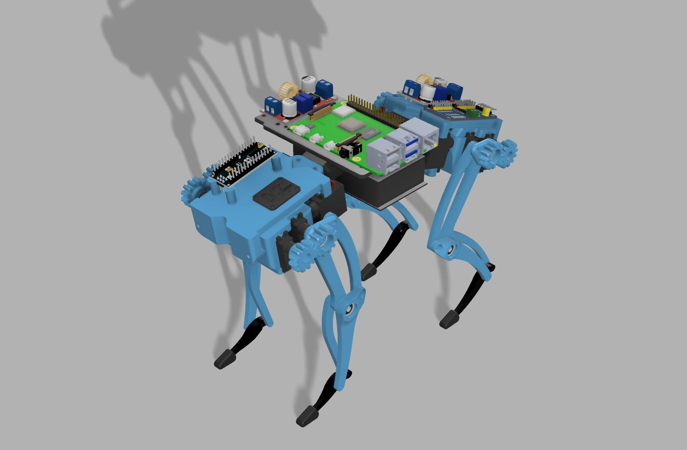

Overview
A 12-DOF quadruped built on Will Cogley's RoboFox mechanical design. My work: 3D printing and assembly, electronics and power integration, servo calibration, and the kinematics and gait code in a MuJoCo model. It stood stably on calibrated servos in February 2026.
Status (Sep 2026): the legs are being reprinted; IK/FK will then be tuned against the real hardware before walking gaits move from simulation to the robot.
Specifications
75 mm
Four-Bar Link Length
Mechanical Design
The mechanical design is Will Cogley's RoboFox; all structural parts are 3D printed. Each leg has 3 degrees of freedom, using a four-bar linkage with 1:1 gears.
- Four-bar leg linkage with 75 mm links, re-modeled in OpenSCAD to check dimensions for the kinematics
- Vibration-isolated IMU mount using foam interface for sensor protection
MuJoCo model of the quadruped (simulation)
Electronics Integration
Embedded system with Raspberry Pi 4 for high-level control, communicating with servo drivers and sensors over I2C.
Power Distribution
- Dual XL4015 buck converters providing 5V (logic) and 6V (servos) rails
- Power budget calculated from total servo current draw with safety margin
- 2S LiPo battery selected based on space and weight constraints
- Decoupling capacitors for servo current spike protection
Communication Architecture
- I2C bus shared between PCA9685 PWM driver and BNO055 IMU
- PCA9685 controlling all 12 Corona DS-843MG servos via PWM
- FSR402 force sensors on feet for ground contact detection

CAD render of the RoboFox frame with the electronics layout
Calibration & Testing
Systematic hardware validation before integration, including individual component testing and servo limit discovery.
- Tested voltage rails to verify buck converter output; identified and replaced one defective unit (outputting 14V instead of 5.9V)
- Mapped safe angular limits for each servo to prevent mechanical interference
- Validated BNO055 IMU readings and calibration status
- Tested FSR402 force sensors for reliable ground contact detection
- Tuned balance parameters for stable standing posture
Kinematics and Gaits in MuJoCo
The kinematics and gait code are developed against a MuJoCo model first, then tuned on the physical robot.
- MJCF model (12 DOF, 4 legs × 3 joints) sized from the robot's 75 mm links and 260 mm body
- IK (closed-form hip roll, Newton–Raphson for pitch and knee) and FK for the four-bar legs, checked with an FK–IK round-trip test
- Gait controller (trot, walk, pace, bound) with Bézier swing trajectories, in simulation
- Next: tune IK/FK against the reprinted hardware
Hardware Components
Compute: Raspberry Pi 4
Actuators: 12× Corona DS-843MG servos
Sensors: BNO055 9-DOF IMU, 4× FSR402 force sensors
Drivers: PCA9685 16-channel PWM driver (I2C)
Power: 2S LiPo, 2× XL4015 buck converters
Technology Stack
Simulation: MuJoCo, Python
Embedded: Raspberry Pi 4, I2C (PCA9685, BNO055)
CAD: OpenSCAD (leg geometry check)
Languages: Python